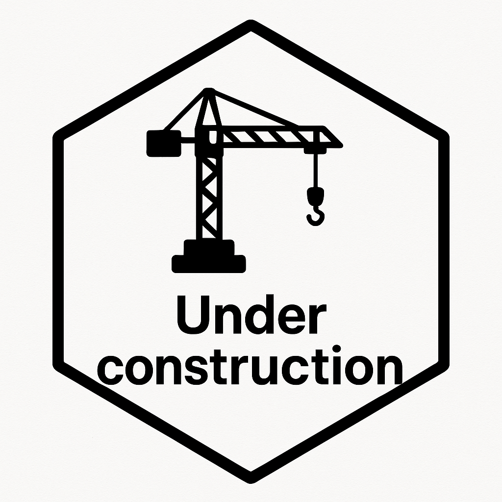

tatooheene: The R Package Toolbox for Health Economic Evaluations Aligned with the Dutch Guideline
Erasmus School of Health Policy & Management (ESHPM)
Email: thielen@eshpm.eur.nl
GitHub: fthielen
üßæ Conflict of Interest Disclosure
- I have received research funding or support from Celgene, CADTH, NICE, ZIN, VWS, FOPH, and EHA.
- I provided consultancy or lectures for AstraZeneca, Boehringer-Ingelheim, Optimax Access, Dark Peak Analytics, ASPHER, GCCHE, and TriData.
- I received hospitality from European Access Academy (dinner) and MSD (coffee). One unpaid talk to COGEM.
Abbreviations: CADTH = Canadian Agency for Drugs and Technologies in Health, NICE = National Institute for Health and Care Excellence, ZIN = Dutch Healthcare Institute, VWS = Dutch Ministry of Health, Welfare and Sport, FOPH = Swiss Federal Office of Public Health, EHA = European Haematology Association, ASPHER = Association of Schools of Public Health in the European Region, GCCHE = Global Consortium on Climate and Health Education, COGEM = Dutch Commission on Genetic Modification
üåç HTA: a national approach?

- Many EU (and non-EU) countries have their own HTA processes and pertinent guidelines
- Huge variation in recommended study perspectives and to-be-included costs
- No consensus on how to calculate the rate for discounting
üá≥üá± The Dutch Guideline for economic evaluations in healthcare (2024 version)
üîé Revised and published in January 2024
Contains three in-depth modules:
- üí∂ The costing manual
- üé≠ QALY and quality-of-life measures (only available in Dutch)
- üìä Uncertainty and Value of information analyses (only available in Dutch).
Things the Dutch costing manual covers
- A step-by-step plan for costing studies
- How to identify, value, and measure costs in healthcare
- Repository for reference prices
- Several formulas for:
- discounting costs and effects
- calculating the friction period (to determine productivity losses)
- calculating annual costs for depreciation and interest
ü§î Why this toolbox?
Dutch EE guideline provides
- üìè Reference values for 2023
- üìä Database updates required from Statistics Netherlands (CBS) and the OECD
BUT: these values are often outdated in published studies
Example: friction period
- \(\text{Friction period} = \frac{365}{\big(\frac{V_f}{V_o}\big)} + 28\)
With:
\(V_f\) = Number of filled vacancies
\(V_o\) = Number of open vacancies
- Stated friction period in 2014 = 85 days
- Used for analyses in 2017, 2018, 2019, and 2021
- Used for analyses in 2017, 2018, 2019, and 2021
- Should have been: 101 (2017), 107 (2018), 111 (2019), 120 (2021) üßÆ
Possible reason
Updating data is manual, tidious, and time consuming
üõ∏ Meet Tatooheene
Technology Appraisal TOOlbox for Health Economic Evaluations in the NEtherlands
- üß∞ R package + üñ•Ô∏è Shiny app
- üÜì Open source
- üõ†Ô∏è On CRAN
- üìÇ On GitHub

Developed by:
ü뮂Äçüî¨ Frederick Thielen ¬∑ ü뮂Äçüíª Stijn Peeters ¬∑ üë©‚Äçüè´ Eline Krijkamp
ü߆ What does it do?
Automates:
- üßÆ CPI-based inflation
- üß± Friction method
- üåç Purchasing power parity (PPP) conversions
- üè• Costing manual data integration
- Reduces errors, improves reproducibility ✔️
⚠️ CAVE: Risk of Confusion
Tatooheene ≠ Tatooine
ü™ê Tatooine
A harsh desert world orbiting twin suns in the galaxy’s Outer Rim, […] a lawless place ruled by Hutt gangsters. Many settlers scratch out a living on moisture farms, while spaceport cities […] serve as home base for smugglers, criminals, and other rogues.” — StarWars Databank
üì¶ Tatooheene, by contrast:
Is structured and rules-based ✅
Helps you model, not smuggle üíª
Lives on CRAN, not in the Outer Rim üì¶
üßò A peaceful, reproducible tool for Dutch HTA calculations.
Test tatooheene and follow along
We want the friction period for 2023
- \(\text{Friction period} = \frac{365}{\big(\frac{V_f}{V_o}\big)} + 28\)
With:
\(V_f\) = Number of filled vacancies
\(V_o\) = Number of open vacancies
- From guideline:
“[…] to limit the effect of fluctuations in the job market […] assume the average friction period over a period of the past 5 years”
Possible approaches
Guideline
- Just use what is stated in the guideline: 115 days for time between 2018-2022
Hand crafted with Excel
- Download data from CBS: https://www.cbs.nl/nl-nl/cijfers/detail/80472ned
- Copy and paste into Excel
- Calculate friction period with formula
Tatooheene
- Use
friction_period()function
Install and load the package
Find the right function
Use the function
| Year | Filled vacancies | Open vacancies | Friction period in days | Friction period in weeks | Friction period days average over 5 years | Friction period weeks average over 5 years |
|---|---|---|---|---|---|---|
| 2023 | 1462 | 423.7 | 133.8525 | 19.12179 | 120.6827 | 17.24039 |
Some other useful functions
For calucations
| What | Function |
|---|---|
| Costs of (medical) equipment | depreciation_interest() |
| Discount value | discount_value() |
| Discount stream (for vectors) | discount_stream() |
| Friction period | friction_period() |
| Purchasing power parities | nl_ppp() |
…and more
For data
| What | Function |
|---|---|
| Medical unit prices | df_rp_medical() |
| Patient & family costs | df_rp_patient() |
| Productivity & other unit costs | df_rp_patient() |
üñ±Ô∏è Shiny Interface
üîå Same power, no coding
üíæ Upload, click, download
üßë‚Äçüíº Friendly for Excel users
üëâ bit.ly/tatooheene
⚙️ Under the Hood
- üߺ Base R +
tidyveresyntax - üß™
testthattesting suite - üìö
roxygen2for docs - üêô GitHub for community input
- üì¶ CRAN for distribution

üì¶ Next steps

üìù Survey: among potential users for feedback, useability, and features
üè´ Teaching: Integrate into HTA and modelling courses
üè• Integrate: into Dutch reimbursement workflows
üßë‚Äçü§ù‚Äçüßë Collaborate: with other HTA communities
üõ†Ô∏è Maintain: Keep up with changes in Dutch EE guidelines
üß≠ Takeaways
üìå Tatooheene solves a real pain point in Dutch HTA modelling
- Automates tedious calculations: no more CPI lookups or friction formula hacks
- Ensures alignment with Dutch EE guideline: consistently and reproducibly
- Supports both code-based and GUI-based workflows (Shiny app)
- Promotes the use of standardised, open-source tooling for reimbursement dossiers
- Encourages better documentation and transparency in HTA
- Makes version control and auditing easier
- Reduces manual workload and chance of modelling errors
Help us make Tatooheene better!
Even though Tatooheene is already functional, we are eager to improve it further. We welcome your input and contributions:
- üìù Feedback: Share your thoughts on the package and Shiny app
- üêõ Bug reports: Let us know if you find any issues
- üõ†Ô∏è Contributions: Help us improve the package with new features or fixes
If you want to test Tatooheene and share your thoughts, you can scan the QR code below:
üôè Thank you for your attention!
And a special thanks to:
- Gianluca Baio for his workshop in Rotterdam on how to build packages!
- The DARTH working group & R for HTA for being able to stand on your giant shoulders
ü´µ What do you think?
- What would you like to see in Tatooheene?
- What would you like to see in the Shiny app?
- Would you use Tatooheene in your work?
- Would you welcome a Tatooheene-like package for your country?